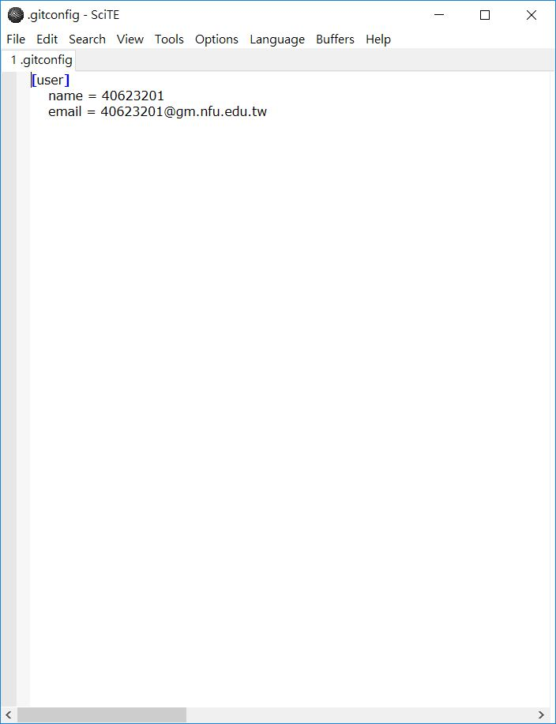

20190308 week3
40623201
這周在教如何使用ungit做檔案推送及版本推還確認，中間在試的過程中發現按commit後會發生錯誤，後來才發現原來是home底下的身分綁定沒有更改導致錯誤，更改後就順利完成了。ungit之所以方便的地方在能夠打中文以及清楚的樹狀圖顯示推了什麼，對於英文不好的來說是一大方便之處，也能更清楚的詮釋更改或新增的東西，十分方便。


40623204
上課心得&內容 : 這週上課教如何在可攜程式系統中配置 ungit、使用ungit推送及版本推還確認，過程中發生按commit後會發生錯誤，之後發現原來是home底下身分綁定沒有更改導致錯誤，更改後就順利完成了。ungit之所以方便是因為在能夠打中文、擁有清楚的樹狀圖顯示新增了哪些東西，還能確定之前的版本是否可以取得，也能夠在必須時回到初始狀態編輯，更能清楚的詮釋更改或新增的東西，對於英文不太優秀的我來說是非常方便的。
40623217
上課內容:
手做簡報:https://mdekmol.github.io/cd2019b-task1-2019cdb_t1_g5/content/week3.html
心得:
經過這星期的ungit教學，讓我發現到這東西的存在可以很簡單的進行傳送資料到倉儲外，還能讓自己去確定之前的版本是否可以取得，能夠在需要的時候回到當初的事物狀況加以編輯，且可以透過這樣的方式，知道曾經做過哪些歷程，能過一目瞭然，算是目前讓我覺得非常方便的操作。
40623223
老師上課的時候交了一個新的名叫ungit推送程式，剛看到的時候覺得好像不錯用，介面也沒有像cmd那麼有壓迫感，感覺應該之後會改用這個，然而在使用之前要設定一大堆有的沒的，除了啟動檔外還要用什麼ssh的認證設定，那個我用的頭很痛，我想我可能不適合用ungit吧
40623229
這週主要老師都在幫我們複習如何使用git然後藉由ungit來推送，並且還有綁定config雖然這個部份是我們第一次的接觸難免會有一些生疏，但是經過一節課以後再配上老師上傳的影片會發現沒有想像中的複雜。
40623232
ungit 進行檔案推送及版本的推還確認，綁定 config，到python wsgi.py動態網站更改部分的資料
，接著開啟ungit後進行commit上傳，到warehousing尋找commit recond，介紹如何使用ungit。
40623242
這週教了一個新的東西叫ungit，原來這東西就是我們之前所有的推送過程的圖解版，不只讓我發現到這東西的存在可以很簡單的進行傳送資料到倉儲外，還能讓自己去確定之前的版本是否有任何小東西被合併可以透過樹狀圖來得知，能夠在需要的時候回到當初的事物狀況加以編輯，且可以透過這樣的方式，就不一定要開到Github.com的commit查看知道曾經做過哪些歷程，能過一目瞭然，讓我覺得非常乾淨方便的系統。
40623243
第三週，這週持續著更改程序，老師要我們使用ungit去整理，是很方便但很陌生，對於我們剛開始看到，還是有點摸不著頭緒，雖然大致上的使用機制是差不多的，都是近端再推到遠端，雖然陌生但不會太難，就是需要一點時間摸索及使用
40623244
這週老師教我們如何用ungit去整理倉儲，雖然很方便，但第一次看到操作步驟，還是會很混亂，因為跟原本學的推送不一樣，但是原理是一樣的，而且介面比較方便去管理，不像以前學的，要檢查有沒問題，會一直檢查不出來，雖然ungit簡單了許多，仍需要一段時間適應。
40623248
40423220
這週是第三週,這週的上課內容是有關ungit的認識與配置,首先,這東西可以很簡單的進行傳
送資料到倉儲外,還有明確的版次,並且可以取得過去版本進行修改,非常之方便。
https://www.youtube.com/watch?v=Za2ChGZlatc
20190301 week2 << Previous Next >> 20190315 week4